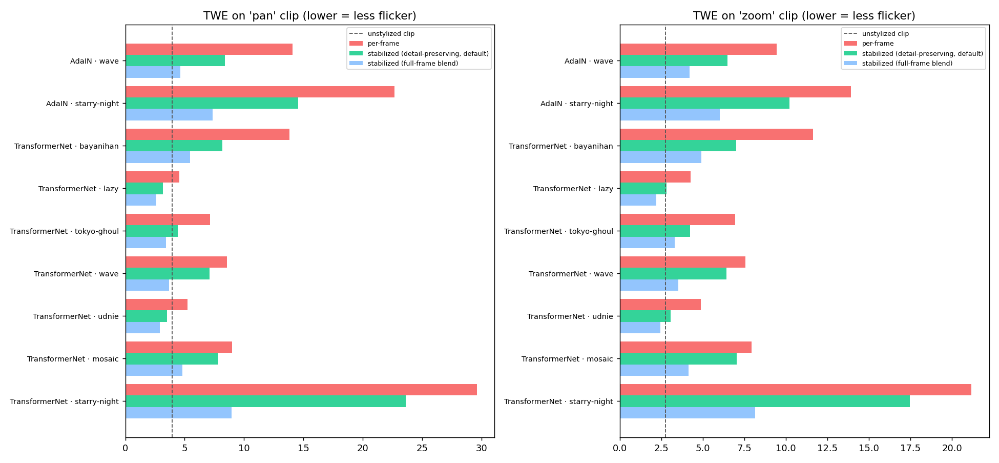
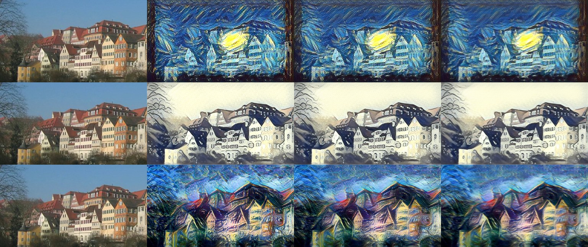

9 style methods × 2 clips · 40 frame pairs · blend λ=0.7 · device cpu. TWE = optical-flow-aligned warping error (lower = less flicker). Sharpness % and style change % are relative to per-frame (full-frame blending lowers TWE partly by blurring the texture — compare its sharpness and style change).
| mode | mean TWE | TWE reduction % | style distance change % | sharpness kept % |
|---|---|---|---|---|
| per-frame | 11.24 | |||
| stabilized (detail-preserving, default) | 8.08 | 28.97 | 3.87 | 90.93 |
| stabilized (full-frame blend) | 4.59 | 55.06 | 59.88 | 41.05 |


| clip | method | mode | twe | twe_reduction_pct | style_distance | style_change_pct | sharpness_pct | note |
|---|---|---|---|---|---|---|---|---|
| pan | Source clip (reference floor) | - | 3.928 | |||||
| pan | TransformerNet · starry-night | per-frame | 29.604 | 183.36 | ||||
| pan | TransformerNet · starry-night | stabilized (detail-preserving, default) | 23.606 | 20.3 | 152.6 | -16.8 | 90.7 | |
| pan | TransformerNet · starry-night | stabilized (full-frame blend) | 8.948 | 69.8 | 116.64 | -36.4 | 35.5 | |
| pan | TransformerNet · mosaic | per-frame | 8.987 | |||||
| pan | TransformerNet · mosaic | stabilized (detail-preserving, default) | 7.82 | 13.0 | 95.0 | |||
| pan | TransformerNet · mosaic | stabilized (full-frame blend) | 4.818 | 46.4 | 45.2 | |||
| pan | TransformerNet · udnie | per-frame | 5.256 | |||||
| pan | TransformerNet · udnie | stabilized (detail-preserving, default) | 3.506 | 33.3 | 92.9 | |||
| pan | TransformerNet · udnie | stabilized (full-frame blend) | 2.91 | 44.6 | 57.3 | |||
| pan | TransformerNet · wave | per-frame | 8.551 | 143.91 | ||||
| pan | TransformerNet · wave | stabilized (detail-preserving, default) | 7.076 | 17.2 | 130.71 | -9.2 | 94.8 | |
| pan | TransformerNet · wave | stabilized (full-frame blend) | 3.669 | 57.1 | 103.83 | -27.9 | 52.9 | |
| pan | TransformerNet · tokyo-ghoul | per-frame | 7.142 | |||||
| pan | TransformerNet · tokyo-ghoul | stabilized (detail-preserving, default) | 4.401 | 38.4 | 91.1 | |||
| pan | TransformerNet · tokyo-ghoul | stabilized (full-frame blend) | 3.427 | 52.0 | 59.4 | |||
| pan | TransformerNet · lazy | per-frame | 4.551 | |||||
| pan | TransformerNet · lazy | stabilized (detail-preserving, default) | 3.169 | 30.4 | 92.2 | |||
| pan | TransformerNet · lazy | stabilized (full-frame blend) | 2.603 | 42.8 | 52.8 | |||
| pan | TransformerNet · bayanihan | per-frame | 13.837 | |||||
| pan | TransformerNet · bayanihan | stabilized (detail-preserving, default) | 8.161 | 41.0 | 89.9 | |||
| pan | TransformerNet · bayanihan | stabilized (full-frame blend) | 5.444 | 60.7 | 42.4 | |||
| pan | AdaIN · starry-night | per-frame | 22.646 | 69.57 | ||||
| pan | AdaIN · starry-night | stabilized (detail-preserving, default) | 14.557 | 35.7 | 72.57 | 4.3 | 85.5 | |
| pan | AdaIN · starry-night | stabilized (full-frame blend) | 7.363 | 67.5 | 164.85 | 136.9 | 33.9 | |
| pan | AdaIN · wave | per-frame | 14.071 | 90.54 | ||||
| pan | AdaIN · wave | stabilized (detail-preserving, default) | 8.402 | 40.3 | 127.81 | 41.2 | 85.2 | |
| pan | AdaIN · wave | stabilized (full-frame blend) | 4.623 | 67.1 | 192.6 | 112.7 | 38.7 | |
| pan | ReCoNet (repo checkpoint) | - | 0.061 | DEGENERATE checkpoint: near-constant output (pixel std 1.28); TWE not meaningful | ||||
| zoom | Source clip (reference floor) | - | 2.766 | |||||
| zoom | TransformerNet · starry-night | per-frame | 21.163 | 184.74 | ||||
| zoom | TransformerNet · starry-night | stabilized (detail-preserving, default) | 17.469 | 17.5 | 157.4 | -14.8 | 93.1 | |
| zoom | TransformerNet · starry-night | stabilized (full-frame blend) | 8.133 | 61.6 | 111.28 | -39.8 | 24.3 | |
| zoom | TransformerNet · mosaic | per-frame | 7.925 | |||||
| zoom | TransformerNet · mosaic | stabilized (detail-preserving, default) | 7.022 | 11.4 | 93.8 | |||
| zoom | TransformerNet · mosaic | stabilized (full-frame blend) | 4.151 | 47.6 | 32.9 | |||
| zoom | TransformerNet · udnie | per-frame | 4.884 | |||||
| zoom | TransformerNet · udnie | stabilized (detail-preserving, default) | 3.058 | 37.4 | 90.9 | |||
| zoom | TransformerNet · udnie | stabilized (full-frame blend) | 2.458 | 49.7 | 45.1 | |||
| zoom | TransformerNet · wave | per-frame | 7.549 | 131.94 | ||||
| zoom | TransformerNet · wave | stabilized (detail-preserving, default) | 6.433 | 14.8 | 114.95 | -12.9 | 93.2 | |
| zoom | TransformerNet · wave | stabilized (full-frame blend) | 3.527 | 53.3 | 121.23 | -8.1 | 35.6 | |
| zoom | TransformerNet · tokyo-ghoul | per-frame | 6.947 | |||||
| zoom | TransformerNet · tokyo-ghoul | stabilized (detail-preserving, default) | 4.235 | 39.0 | 89.5 | |||
| zoom | TransformerNet · tokyo-ghoul | stabilized (full-frame blend) | 3.301 | 52.5 | 47.6 | |||
| zoom | TransformerNet · lazy | per-frame | 4.257 | |||||
| zoom | TransformerNet · lazy | stabilized (detail-preserving, default) | 2.804 | 34.1 | 91.0 | |||
| zoom | TransformerNet · lazy | stabilized (full-frame blend) | 2.201 | 48.3 | 45.2 | |||
| zoom | TransformerNet · bayanihan | per-frame | 11.636 | |||||
| zoom | TransformerNet · bayanihan | stabilized (detail-preserving, default) | 7.011 | 39.7 | 90.2 | |||
| zoom | TransformerNet · bayanihan | stabilized (full-frame blend) | 4.903 | 57.9 | 32.9 | |||
| zoom | AdaIN · starry-night | per-frame | 13.903 | 57.15 | ||||
| zoom | AdaIN · starry-night | stabilized (detail-preserving, default) | 10.198 | 26.6 | 55.36 | -3.1 | 89.2 | |
| zoom | AdaIN · starry-night | stabilized (full-frame blend) | 6.025 | 56.7 | 162.07 | 183.6 | 27.4 | |
| zoom | AdaIN · wave | per-frame | 9.443 | 73.63 | ||||
| zoom | AdaIN · wave | stabilized (detail-preserving, default) | 6.475 | 31.4 | 104.77 | 42.3 | 88.5 | |
| zoom | AdaIN · wave | stabilized (full-frame blend) | 4.2 | 55.5 | 189.97 | 158.0 | 29.8 | |
| zoom | ReCoNet (repo checkpoint) | - | 0.039 | DEGENERATE checkpoint: near-constant output (pixel std 1.22); TWE not meaningful |